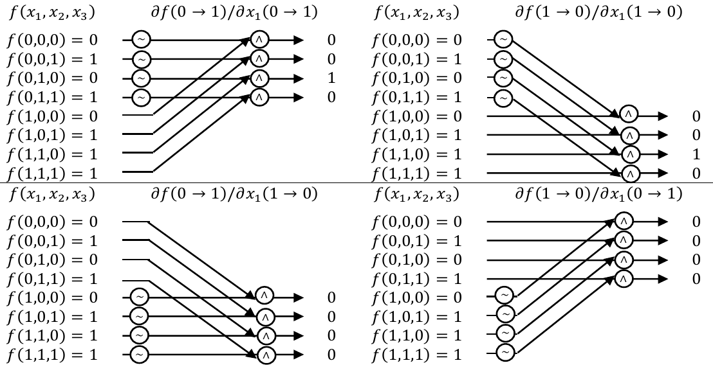

The thesis deals with the application of decision diagrams in reliability analysis. It is titled Reliability Analysis of Complex Systems Using Decision Diagrams. The original text is available here and the text with corrections mentioned on this page is available here. The following mistakes were identified in the original text:
Page 33
Bottom part of the Fig. 21 showing opposite change derivatives has negations ~ placed at wrong cofactor. They are placed at f(01, x) and should be placed at f(11, x). The correct image is: 
Page 41
Tab. 2.2 has incorrect caption. The values in the table correspond to the function f(x) = max (min (x1, x2), x3).
Page 117
The second sentence on the page “assume the same exponential distributions of component reliabilities as authors in [11] …” contains incorrect reference. The correct reference is (as mention correctly on the previous page) [106], which references the paper: Time-Dependent Reliability Analysis Based on Structure Function and Logic Differential Calculus.
Subsequently, Tab 5.4 contains wrong formulas. The correct table is:
| Component | Component reliability |
|---|---|
| 1 | exp (−t/25, 359) |
| 2 | exp (−t/6, 246) |
| 3 | exp (−t/4, 764) |
| 4 | exp (−t/44, 360) |